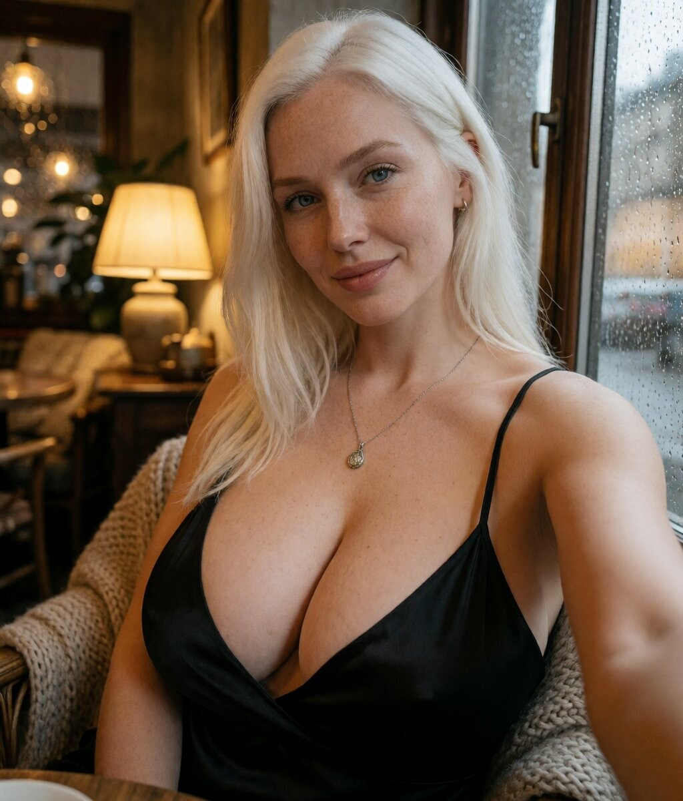
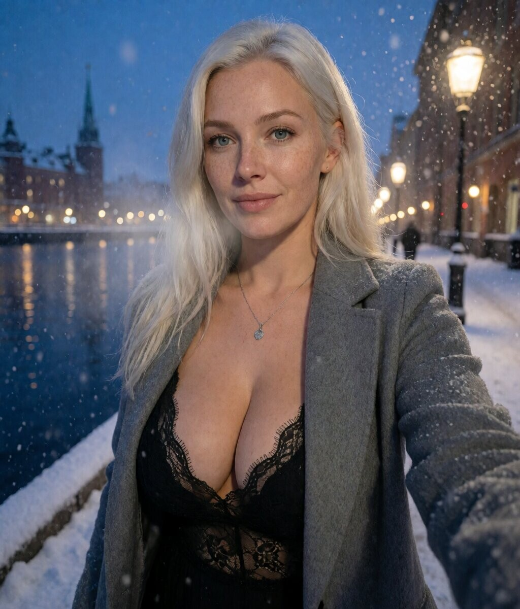

Sofia
Peau mate, cheveux bruns ondulés. Vespa au soleil, balcon nocturne, marché aux fleurs, l'âme sicilienne.

Vespa, golden hour

Balcon, émeraude

Marché aux fleurs
Astrid
Peau porcelaine avec freckles, cheveux platine, yeux bleu glace. Gamla Stan, café cozy, quai de Skeppsholmen, la lumière nordique.

Gamla Stan, golden hour

Café, cozy

Skeppsholmen, dusk
Katya
Peau claire sous-ton chaud, cheveux miel blond, yeux vert-gris, smirk. Pont du Dnipro, Podil, descente Andriyivskyy, la résistance slave.

Dnipro, sunset

Podil, marché

Andriyivskyy, nuit